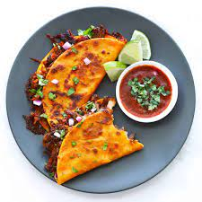
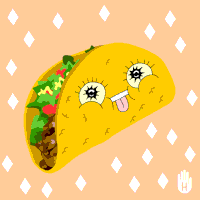

My Favorite Recipe
How to Make Birria Tacos
- Remove the meat from the sauce and shred it with two forks.
- Add some of the sauce (the consomé) to a bowl and add a little beef broth if it needs to be thinned out.
- Mince up some onion and cilantro and mix it in a small bowl with a few squeezes of lime and a pinch of salt.
- Add a spoonful of the cilantro and onion mixture to the consomé and add a squeeze of lime.
- Dip a corn tortilla into the top of the sauce. This should be mostly fat. And add it to a non-stick skillet, set over medium-high heat.
- Flip over and then add a small handful of shredded meat and a handful of Oaxacan cheese. Shape it into a quesadilla/taco. And flip it over so it can get crispy and melty on the other side.
- Transfer to a baking sheet and place in a 200F oven while you work your way through the rest of the Birria tacos.
Why this is my favorite recipe:
This Birria Tacos recipe holds a special place in my heart. The rich flavors and the crispy texture of the tacos make it a delightful and satisfying dish for any occasion.
Check out the recipe A Cozy Kitchen.